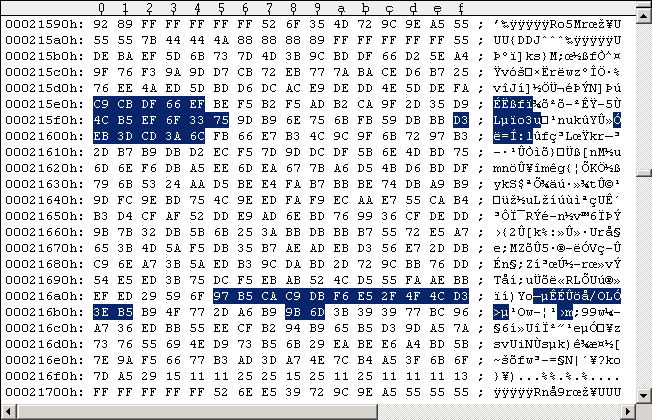
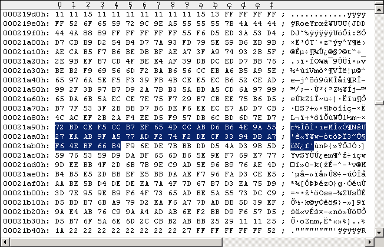
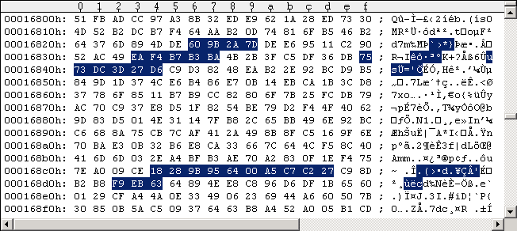
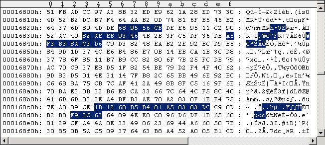
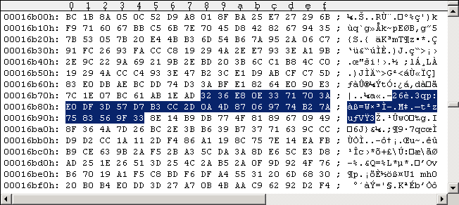

Main Index Routine Index Memory IndexRapidLok6 patches
This patches are recommended for WinVice gameplay and remastering without a drive speed control: Apply this patches and forget the protection. Please refer to my old original patches here on how to use Maverick v5.04 for patching G64 images, and on the address restrictions when patching RapidLok. As RapidLok versions 5, 6 and 7 are similar, I combined the patches for the different versions: Yes, the patches below work for RapidLok versions 5, 6 and 7, even if there are differences in the code and the sector parity. For both PAL and NTSC! You only have to make sure the marked bytes in the figures below are exactly the same before you edit them. We start here with a short cut in the $0786 routine that directly calls the $0587 file transfer management ($07D2-JSR). This bypasses the initial Track 19 DOS reference header integrity check & alignment and the Track 36 handlers. The first instructions of the $0587 file transfer management routine are also bypassed as they're no longer necessary. A little "code addon" is necessary for RapidLok 7, as it's known to check (at least) the Track 22 and 25 Keys in a $0415 routine addon ($049D-CMP: values must be >=$21). We skip the Track 36 Key retrieval by misdirecting the $07D2-JSR, hence all our Keys have zero value here. The $07C4-$07CB opcodes are no longer necessary, so we overwrite them with some code setting all Track 36 Keys to e.g. $77. See following code snippets for both patches: --- ORIGINAL CODE #1 ------------------------------------------------------------------------- 07C0: A5 16 LDA $16 07C2: 65 17 ADC $17 ; summarize "Header block ID": [$16/$17]="P1" or "P2" 07C4: AA TAX 07C5: 4D 51 01 EOR $0151 ; 1st file to be loaded from disk: [$0151]=0 07C8: 4D 52 01 EOR $0152 ; 1st file to be loaded from disk: [$0152]=0, >2nd: [$0152]=$6B 07CB: 8E 51 01 STX $0151 07CE: 84 16 STY $16 ; [$16]:=4 07D0: 84 D4 STY $D4 ; [$D4]:=4 max errors before loader dies 07D2: 20 58 05 JSR $0558 ; Locate Track 36 Key Sector, enforce Job #4 ; (execute $0700 Track 36 handler), ; run file transfer management routine ---------------------------------------------------------------------------------------------- --- PATCHED CODE #1 ----------------------------------------------------------------------- 07C0: A5 16 LDA $16 07C2: 65 17 ADC $17 ; summarize "Header block ID": [$16/$17]="P1" or "P2" 07C4: A9 77 LDA #$77 07C6: A2 21 LDX #$21 07C8: 9D 53 01 STA $0153,X ; set [$0153-$0174]:=$77 (fake Track 36 Keys for RapidLok7) 07CB: CA DEX 07CC: 10 FA BPL $07C8 07CE: 84 16 STY $16 ; [$16]:=4 07D0: 84 D4 STY $D4 ; [$D4]:=4 max errors before loader dies 07D2: 20 8F 05 JSR $058F ; run file transfer management routine ------------------------------------------------------------------------------------------- As all RapidLok routines are encrypted on disk we have to encrypt all our patches before we apply them to the G64 images. The $0300 routine decrypts the RapidLok code routines [$039C-$07FF]. Setting a breakpoint into the decryption loop (e.g.break 8:0342 if 8:.Y == C4) reveals the original encrypted bytes, the bytes they get decrypted (xor'ed) with, and the decrypted plain code bytes: --- ORIGINAL DECRYPTION #1a ---------- 07C4 = |18 28 9B 95 64 00 A5 C7 C2 27| xor |B2 65 CA 94 29 52 A4 49 93 26| = |AA 4D 51 01 4D 52 01 8E 51 01| -------------------------------------- --- PATCHED DECRYPTION #1a ----------- 07C4 = |1B 12 68 B5 B4 01 A5 83 83 DC| xor |B2 65 CA 94 29 52 A4 49 93 26| = |A9 77 A2 21 9D 53 01 CA 10 FA| -------------------------------------- --- ORIGINAL DECRYPTION #1b ----------------- 07D2 = |F9 EB 63| xor |D9 B3 66| = |20 58 05| --------------------------------------------- --- PATCHED DECRYPTION #1b ------------------ 07D2 = |F9 3C 63| xor |D9 B3 66| = |20 8F 05| --------------------------------------------- The next two problems arise in a $0415 routine addon, see following codesnippet: --- $0415 routine addon snippet ------------------------------------------------------------- 0488: 20 34 07 JSR $0734 ; measure length of next following Sync mark (in X); Y:=0 048B: E0 60 CPX #$60 048D: B0 14 BCS $04A3 ; all ok if X = Sync length < $60, so don't branch here! 048F: C8 INY ; start following data byte count with Y=1 0490: 20 26 07 JSR $0726 ; counts the $7Bs (returned in A) until next Sync. CF:=1. 0493: E5 0E SBC $0E ; subtract Key for current Track 0495: 90 02 BCC $0499 ; branch if A<[$0E] (result negative) 0497: 49 FF EOR #$FF ; it's A>=[$0E] (result positive), CF=1 -> A:= -A Jump from $0495: 0499: 69 04 ADC #$04 049B: 30 06 BMI $04A3 ; all ok if: [$0E]-4 <= #7Bs <= [$0E]+4, so don't branch here! --------------------------------------------------------------------------------------------- 04A3: 0E 40 04 ASL $0440 ; Kills the head read command at $043E. Avoid this!!! --------------------------------------------------------------------------------------------- This $0415 routine addon checks the integrity of the $7B extra sector. We must under all circumstances avoid the $048D-BCS and $049B-BMI branches to $04A3 as this would kill the $043E-LDA head read command. The result of the $0733 routine (length of Sync mark preceding $7B extra sector, called at $0734) must be <$60, the result of the $0725 routine (number of $7B's in extra sector) must be in close range around the [$0E] value to avoid the $049B-BMI. So we simply fix the $0725 routine to return the [$0E] value: --- PATCHED CODE #2 ----------------------------------- 0726: A5 0E LDA $0E ; simply return A:=[$0E] 0728: 60 RTS 0729: A6 *** ; $07xx sector parity ------------------------------------------------------- As $0729 is an odd address, we use the byte here for fixing the sector parity, so the original sector parity remains the same. Now to the $0733 routine: It turns out there's a second call to this routine in RapidLok5 we have to take into account as well: each time the $0415 routine encounters a $55 empty sector while searching for a specific $6B data sector, it restarts searching at the beginning of the track (right after the track header). This possibly results in a dead-lock (error abort when [$E7] decreases to zero). The $0439-BNE branching to $0419 instead of $0415 (as in RapidLok6) is responsible for this: [$E7] gets decreased and the $041D-JSR calls the $052A routine to locate the DOS reference sector (track header). See following two code snippets: --- $0415 routine snippet (RapidLok5) ----------------------------------------------------------------- Jump from $042D, $0439: 0419: C6 E7 DEC $E7 ; initial value 9 -- irrelevant as [$C6] gives max 4 times 041B: 30 E3 BMI $0400 ; if no tries left ($BE/$E7): branch to exit of RapidLok - Avoid this!!! 041D: 20 2A 05 JSR $052A ; Find DOS reference sector on current Track (integrity check). 0420: B0 DE BCS $0400 ; if no tries left ([$C6]): branch to exit of RapidLok - Avoid this!!! ------------------------------------------------------------------------------------------------------- 0436: 4D 01 1C EOR $1C01 ; [$1C01]=$6B if data sector really found ($6B xor $6B = 0) 0439: D0 DE BNE $0419 ; branch if not found ------------------------------------------------------------------------------------------------------- --- $052A routine snippet ------------------------------------------------------------------ JSR from $055E, Jump from $054F: 052A: A9 18 LDA #$18 052C: 85 C5 STA $C5 ; $18 tries to find the DOS reference sector on current Track Jump from $054A: 052E: A2 1D LDX #$1D ; start value for following Sync length measurement 0530: 20 33 07 JSR $0733 ; Measure length of next following Sync mark (in X). CF:=0, [$BD]=A:=6 if Sync found. 0533: B0 17 BCS $054C ; branch if no Sync found -> reposition head and try again -------------------------------------------------------------------------------------------- The solution now is as follows: let the $0415 routine call the $052A routine (cleared carry flag expected on return) and let that routine call the $0733 routine (codesnippet above). But inside the $0733 routine clear the last return address from cpu stack (back into $052A routine), refill the [$E7] error counter, clear the carry flag and return directly to the $0415 routine (directly behind the $041D-JSR to $052A). The $041D-JSR to $052A is harmless then. But, as mentioned before, the $0733 routine is also called at its second entry point $0734 and is expected to only return e.g. X:=0 to the calling $0415 routine addon. The following $0733 routine code will solve both situations: --- PATCHED CODE #3a/b ---------------------------------------- JSR from $0533: 0733: D0 0A BNE $073F ; take the branch /////////////////////////// JSR from $0488: 0734: 0A ASL A ; dummy, accu value irrelevant /////////////////////////// 0735: A2 00 LDX #$00 ; simply return zero: 0<$60 0737: 60 RTS --------------------------------------------------------------- 073F: 68 PLA ; clear last return address 0740: 68 PLA ; to $052A routine from stack 0741: 85 E7 STA $E7 ; [$E7]:=5 refills error counter 0743: 18 CLC 0744: 60 RTS ; return to $0420 with CF=0 --------------------------------------------------------------- If called at $0734 we simply return X:=0, the accu register value is irrelevant. But if called at $0733 the dummy $0A-ASL command at $0734 completes the branch to $073F, where we clear the last return address to the $052A routine from the cpu stack, refill [$E7] error counter and return with CF=0 to the $0415 routine. We leave the $0738/$0739 code bytes untouched according to the RapidLok address restrictions! As mentioned before we have to encrypt our patches before we can apply them to the G64 images. The following snippets show the original decryptions and how we have to change them: --- ORIGINAL DECRYPTION #2 --------------------------- 0726 = |60 9B 2A 7D| xor |CD 9B 36 6D| = |AD 00 1C 10| ------------------------------------------------------ --- PATCHED DECRYPTION #2 ---------------------------- 0726 = |68 95 56 CB| xor |CD 9B 36 6D| = |A5 0E 60 A6| ------------------------------------------------------ --- ORIGINAL DECRYPTION #3a ----------------------------------- 0733 = |EA F4 B7 B3 BA| xor |52 A4 49 93 26| = |B8 50 FE 20 9C| --------------------------------------------------------------- --- PATCHED DECRYPTION #3a ------------------------------------ 0733 = |82 AE EB 93 46| xor |52 A4 49 93 26| = |D0 0A A2 00 60| --------------------------------------------------------------- --- ORIGINAL DECRYPTION #3b -------------------------------------------- 073F = |75 73 DC 3D 27 D6| xor |CD 9B 36 6D DB B6| = |B8 E8 EA 50 FC 60| ------------------------------------------------------------------------ --- PATCHED DECRYPTION #3b --------------------------------------------- 073F = |A5 F3 B3 8A C3 D6| xor |CD 9B 36 6D DB B6| = |68 68 85 E7 18 60| ------------------------------------------------------------------------ The $0726, $0733, $073F, $07C4 and $07D2 code addresses are obviously located in the $07xx buffer which got read into memory by the $0300 routine: Job #4, Track 18 Sector 3. Ok, most integrity checks are bypassed or disabled now. Only one remains: The $0422 routine searches for $6B data sectors with the correct IDs and reads them. The $042A-JSR calling the $0678 routine ("wait for next $6B data sector Sync mark") may cause trouble if a $75 header is not immediately found. So we simply change the behaviour of the $0678 routine to only wait for the next Sync mark. The calling $0422 routine will then verify the following sector is really a $6B data sector (the $0678 routine will be called again if it's not a $6B data sector). The $0688-$0692 instructions shown in the following code snippet will do the job. The other $0678-$0686 instructions are vital for the file transfer, they were spread over the now bypassed and overwritten code. The [$1D]:=0 at $067C was remaining from the integrity checks of the $0415 routine addons (0 <= [$1D] < $20). --- PATCHED CODE #4 -------------------------------------------------------------------------- 0678: A9 00 LDA #$00 067A: 85 D5 STA $D5 ; [$D5]:=0 (for $6B data sector parity calculation) 067C: 85 1D STA $1D ; [$1D]:=0 ([$0150]-check) 067E: A9 88 LDA #$88 0680: 85 15 STA $15 ; offset to start of file data in [$04xx] buffer: $75+$12+1=$88 0682: A9 7E LDA #$7E 0684: 85 17 STA $17 ; lo-address where data sectors are written to in $0422 routine 0686: 85 BE STA $BE ; reset [$BE] (number of tries to find a $6B data sector) 0688: 2C 00 1C BIT $1C00 068B: 30 FB BMI $0688 ; wait for Sync 068D: AD 01 1C LDA $1C01 ; read byte (mandatory - $F556 Kernal routine "Wait for Sync") 0690: B8 CLV 0691: 18 CLC ; CF:=0 (Sync found) 0692: 60 RTS 0693: F2 *** ; $06xx sector parity 0694: E8 *** ; codesegment checksum ---------------------------------------------------------------------------------------------- Jump from $0668: 0695: 38 SEC 0696: 78 SEI 0697: 60 RTS ---------------------------------------------------------------------------------------------- As $0693 is an odd address, we use the byte for fixing the sector parity of the $06xx buffer, so the original sector parity remains the same. This is important as this sector is known to have a different sector parity in RapidLok 5, 6 and 7 versions (due to a few code differences)! The $0694 address is even, we use it for fixing the codesegment checksum in a $0415 routine addon. Different RapidLok versions have different codesegment checksums, but the $0694 correction value is the same (!) for all RapidLok 5, 6 and 7 versions I have. We must leave the $0695-$0697 instructions unchanged as the $0625 routine needs them. Important note: The "error counting variables" (explicitly [$BE] here) are no longer decremented and/or no longer checked. The $0422 routine will now endlessly loop until a $6B data sector with correct parity and correct sector ID is found. Usually this is really no problem (e.g. in WinVice). But there may be problems with remastered 1541 disks when the track data is too long for a disk rotation and a $6B data sector gets truncated - this implies an endless loop. Black screen or endless loop, the disk is dead - and you know how to notice it now. Watch out for "trunc" statements in the nibwrite console log. As mentioned before we have to encrypt our patches before we can apply them to the G64 images. The following snippets show the original decryptions of the $0678 routine and how we have to change them: --- ORIGINAL DECRYPTION #4 -------------------------------------------------------------------- 0678 = |91 B3 7F 92 BE E9 0C 92 FD CC 24 38 02 5A F1 3E 27 51 52 43 9C D3 93 23 CA 5D 24 7D 31| xor |9B 36 6D DB B6 6C D9 B2 65 CA 94 29 52 A4 49 93 26 4D 9B 36 6C D9 B3 66 CD 9B 36 6D DB| = |0A 85 12 49 08 85 D5 20 98 06 B0 11 50 FE B8 AD 01 1C C9 75 F0 0A 20 45 07 C6 12 10 EA| ----------------------------------------------------------------------------------------------- --- PATCHED DECRYPTION #4 --------------------------------------------------------------------- 0678 = |32 36 E8 0E 33 71 70 3A E0 DF 3D 57 D7 B3 CC 2D 0A 4D 87 06 97 74 B2 7A 75 83 56 9F 33| xor |9B 36 6D DB B6 6C D9 B2 65 CA 94 29 52 A4 49 93 26 4D 9B 36 6C D9 B3 66 CD 9B 36 6D DB| = |A9 00 85 D5 85 1D A9 88 85 15 A9 7E 85 17 85 BE 2C 00 1C 30 FB AD 01 1C B8 18 60 F2 E8| ----------------------------------------------------------------------------------------------- The $0678 routine is obviously located in the $06xx buffer which got read into memory by the $07B0 routine: Job #3, Track 18 Sector 6. I used the Maverick v5.04 GCR Editor (in WinVice) to "edit" the G64 images. Use "UltraEdit" in hex-mode to apply the changes directly to the G64 images (GCR code). The following Figure #1 shows the original Track 18 Sector 3 of my Pirates disk side 2 G64 image (PAL), Figure #2 shows the modifications ($0726, $0734, $07C4, $07D2 patches).
Figure #1: Original Track 18 Sector 3 of Pirates disk side 2 (PAL), G64 image.
Figure #2: Patched Track 18 Sector 3 ($0726, $0733, $07C4, $07D2 patches), G64 image.The following Figure #3 shows the original Track 18 Sector 6 of my Pirates disk side 2 (PAL) and Figure #4 the modifications ($0678 routine). Note: There are a few differences in the RapidLok 5, 6 and 7 sector data here. Make sure the marked bytes are exactly identical and change them as shown.

Figure #3: Original Track 18 Sector 6 of Pirates disk side 2 (PAL), G64 image.
Figure #4: Patched Track 18 Sector 6 (patched $0678 routine), G64 image.The following Figures #5-#8 show how the patches are applied to D64 images. You should not need this, but I show it here how this is done:

Figure #5: Original Track 18 Sector 3 of Pirates disk side 2 (PAL), D64 image.
Figure #6: Patched Track 18 Sector 3 ($0726, $0734, $07D2 patches), D64 image.
Figure #7: Original Track 18 Sector 6 of Pirates disk side 2 (PAL), D64 image.
Figure #8: Patched Track 18 Sector 6 (patched $0678 routine), D64 image.The patches here allow the removal of all $7B extra sectors, all $75 sector headers and all $55 empty sectors from RapidLok protected disks (including their preceding Sync marks). Only the $52 DOS reference header on each RapidLok formatted track, the RapidLok $6B data sectors and the DOS format sectors ($52 headers and $55 data sectors) are required anymore. All Sync marks can be set to standard 5 bytes length.